协同过滤算法
回顾：基于内容的推荐算法
上一次，我们介绍了基于内容的电影推荐算法，该算法要求事先知道每部电影的特征向量$x$，然后根据$x$去估计每个用户的特征向量$\theta$。预测得到的第$j$个用户对于第$i$部电影的评分就等于${({\theta}^{(j)})}^Tx^{(i)}$，如果预测评分较高，则将这部电影推荐给该用户。
在阅读下面的内容之前，建议转到上一次的分享内容再过一遍，因为两者有很多相似之处。（前文传送门戳我）
协同过滤
现在，假设我们并不知道每部电影的特征向量，但知道每个用户的特征向量（表征用户对于爱情片or动作片的热爱程度）。
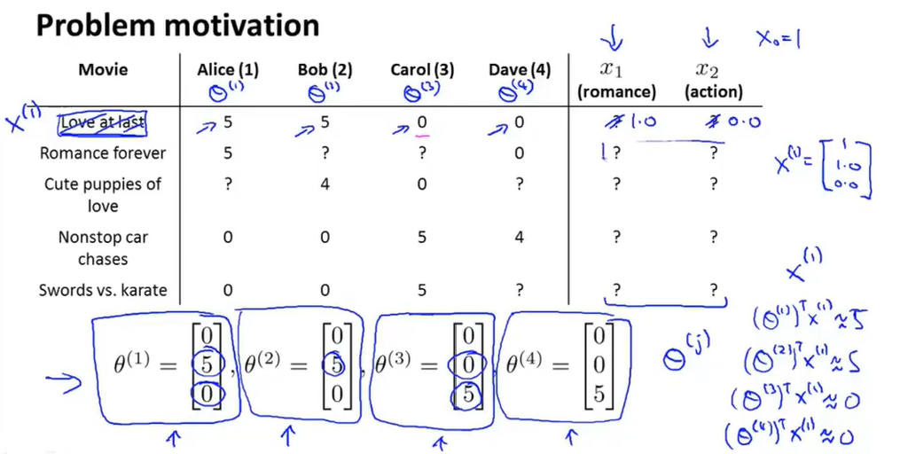
比如Alice的特征向量是$\theta^{(1)}=[0,5,0]$，则表明Alice比较喜欢爱情片（第二个维度表征用户对于爱情片的喜爱程度），同理可知Carol比较喜欢动作片。
有了这些条件，就可以估计每部电影的特征向量$x$了，和之前基于内容的推荐算法一样，都可以基于最小二乘法进行求解。
求解目标写成数学形式如下：
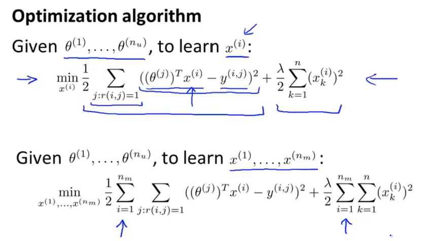
其中，$r(i,j)$表示第j个用户是否对第i部电影做了评分，已评为1，否则为0.
$y^{(i,j)}$表示第j个用户对于第i部电影的评分分值。当然，前提是已经做过评分。
你应该已经发现了，上面叙述的算法恰好和之前基于内容的推荐算法相反，或者说，一个问题的已知量和待求解量，恰好是另一个问题的待求解量和已知量：
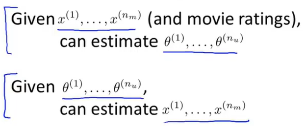
于是，这就变成了一个先有鸡还是先有蛋的问题：有了$x$就能估计出$\theta$，有了$\theta$就能估计出$x$.
一种可行的做法是：随机猜测一些值作为$\theta$，然后用它们估计出$x$；再用这些估计出的$x$去估计新的$\theta$，如此循环往复下去，便能够得到一组合理的$x$和$\theta$.
这就是最基本的协同过滤(Collaborative filtering)算法。
总结一下协同过滤的思想：当执行该算法时，要观察大量的用户，观察这些用户的实际行为，来协同地得到更佳的每个人对于电影的评分。因为如果每个用户都对一部分电影做了评价，那么每个用户都在帮助算法学习出更合适的特征。也就是说，通过自己对几部电影进行评分，自己就能够帮助这个系统更好的学习特征，而这些特征又能够被用来更好的预测其他用户的评分。所以协同的意思是每个用户都在帮助算法更好地进行特征学习。
协同过滤算法
上面我们介绍了给定不同用户的特征向量$\theta$去预测每部电影的特征向量$x$，以及反过来给定每部电影的特征向量$x$去预测不同用户的特征向量$\theta$的方法。
现在，让我们将两者结合起来，以得到协同过滤算法。
之前已经讲过，这是一个先有鸡还是先有蛋的问题，一种可行的方法是先随机初始化特征向量，通过不断迭代的方式去学习。在这里，我们将介绍一种更加高效的方法，它能够同时预测$\theta$和$x$.
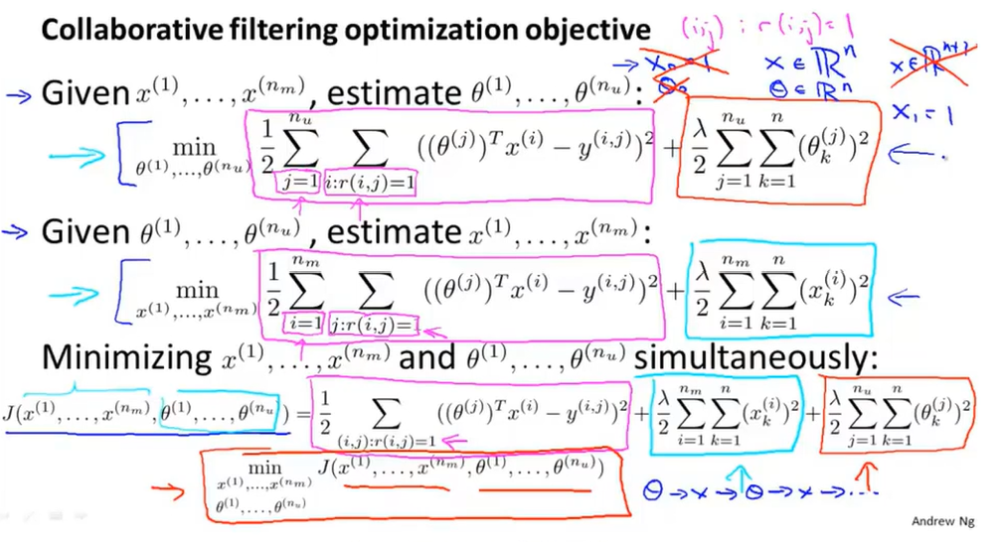
方法如上图所示，前两个优化目标是之前介绍的方法，而最后一个优化目标则是将前两个优化目标做了合并，不同颜色圈起来的部分就是合并前后的对应部分。
这样，就可以同时优化$\theta$和$x$了。
注意，在之前所介绍的方法中，无论是$\theta$还是$x$，它们都是$n+1$维度的，其中$x$的第1维作为截距项，手动设置为1。而对于合并后得到的新的优化目标，不需要截距项了，而是交由模型自行去学习，因此，$x$的维度是$n$，同样，$\theta$的维度也从$n+1$变成了$n$.
现在来正式定义协同过滤算法：
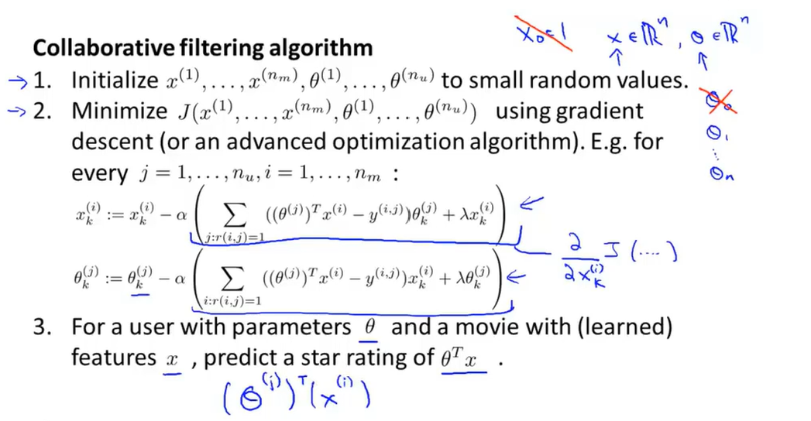
协同过滤算法的向量化实现
将每个用户对于每部对于的评分写成矩阵的形式：
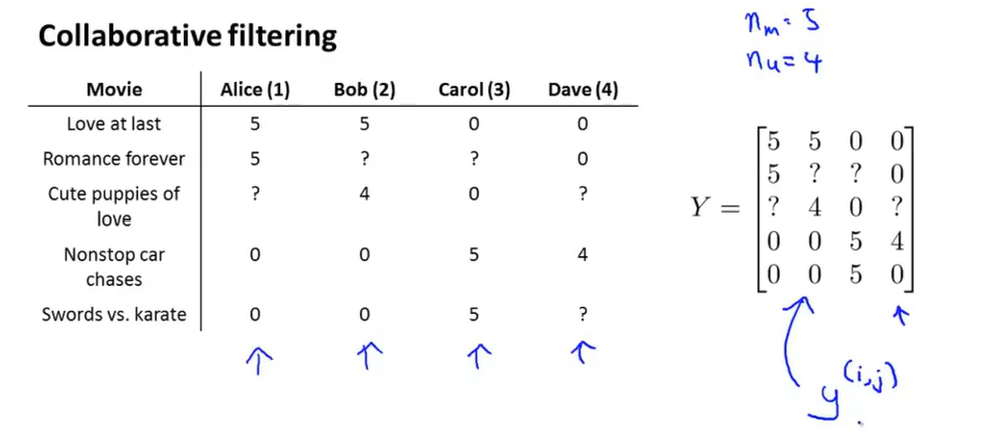
该矩阵的第$(i,j)$位置元素值等于对应的${(\theta^{(j)})}^{(T)}$和$x^{(i)}$的点乘结果，因此该矩阵又可以表示如下：
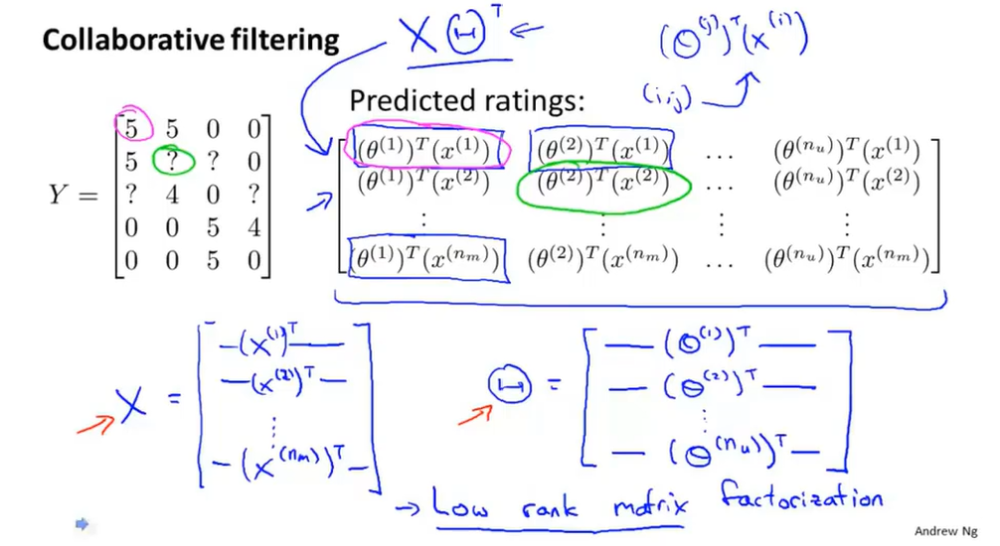
这个矩阵可以分解为两个矩阵$X$和$\Theta$的乘积，该过程被称为低秩矩阵分解。
在使用协同过滤算法得到用户特征向量$\theta$和电影特征向量$x$后，如何使用这些学习到的特征来找到相关电影呢？
具体来说，对于每一部电影（比如第$i$部电影），能够学习到其特征向量（$x^{(i)}$），那么，如何找到跟第$i$部电影相关的其它电影呢？
由于已经有了所有电影的特征向量，因此只需要计算每一部电影与第$i$部电影的特征向量之间的距离，选出距离最近的前几部电影作为最相关的电影即可。
均值规范化在协同过滤算法中的作用
还是基于上面电影推荐的栗子，假设第5位用户Eve并未对任何一部电影做过评分，现在需要把这些评分预测出来。
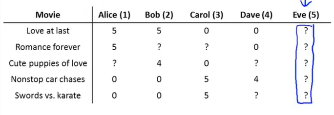
基于上面介绍的协同过滤算法，我们可以求解一个最优化问题来得到用户Eve的特征向量，进而通过${(\theta^{(5)})}^Tx^{(i)}$来得到Eve对于每部电影的评分，其中$i=1,2,3,4,5$，表示共5部电影。
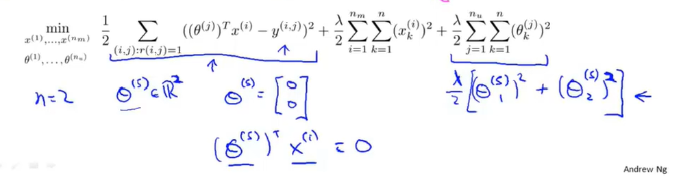
由于Eve并未对任何电影做过评分，因此第一项中所有的$r(i,j)$均为0，从而第一项对于优化不再起作用。
第二项与$\theta$无关，因此对于优化也不起作用。
只有第三项和$\theta$有关，展开可写成上图所示形式：
$$\frac{\lambda}{2}[{(\theta_1^{(5)})}^2+{(\theta_2^{(5)})}^2]$$
最小化这一项的理想结果就是${\theta_1^{(5)}}=\theta_2^{(5)}=0$，即$\theta^{(5)}=[0,0]^T$.
这样一来，${(\theta^{(5)})}^Tx^{(i)}=0,i=1,2,3,4,5$，也就是说，预测得到的Eve对于每一部电影的评分都是0：
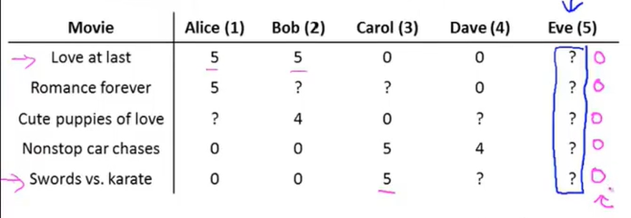
这显然是不合理的！因为此时的推荐算法无法确定到底应该将哪些电影推荐给用户Eve.
当引入了均值规范化操作后，就能够解决这一问题了。
将评分结果写入矩阵，并计算每部电影的平均得分（只针对有评分的电影，其中的？不参与计算），然后将每个用户对于每部电影的评分减去每部电影的平均得分，得到一个均值为0的评分矩阵：
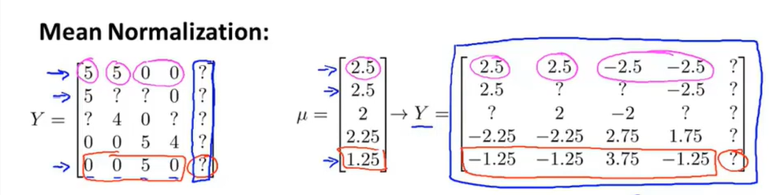
在这个新得到的评分矩阵上运行协同过滤算法，和之前一样，得到用户Eve的特征向量为$\theta^{(5)}=[0,0]^T$，同样有${(\theta^{(5)})}^Tx^{(i)}=0,i=1,2,3,4,5$
但由于之前减去了均值，因此最终预测的评分需要再加上对应的均值，这样才得到最终的预测评分：
$${(\theta^{(5)})}^Tx^{(i)}+\mu_i,i=1,2,3,4,5$$
第一项为$[0,0,0,0,0]$，第二项$\mu=[2.5,2.5,2.2.25,1.25]$，因此最终预测的用户Eve对于每部电影的评分为：
$$[0,0,0,0,0]+[2.5,2.5,2.2.25,1.25]=[2.5,2.5,2.2.25,1.25]$$
这是有意义的，也就是说，当一个用户未对任何一部电影做过评分时，就把所有对某部电影做过评分的用户评分值的均值作为当前用户对于某部电影评分的预测值。